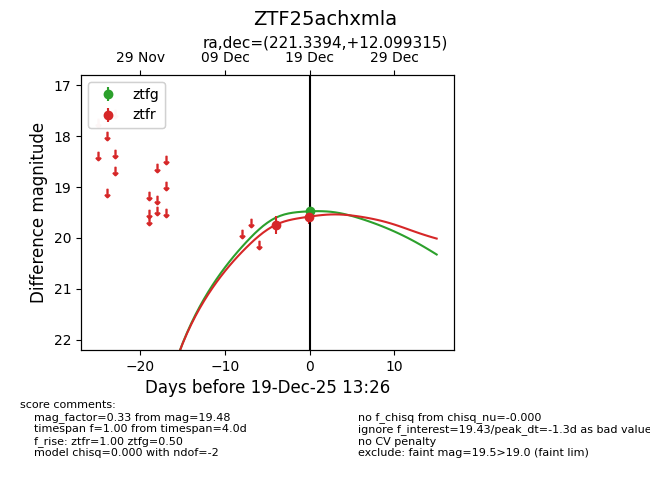
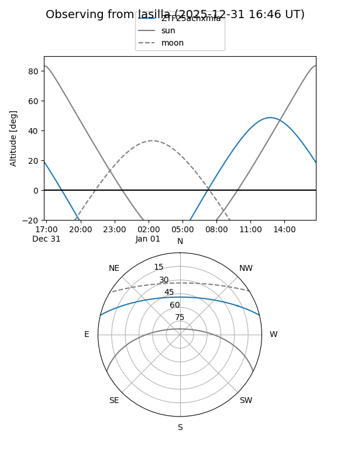
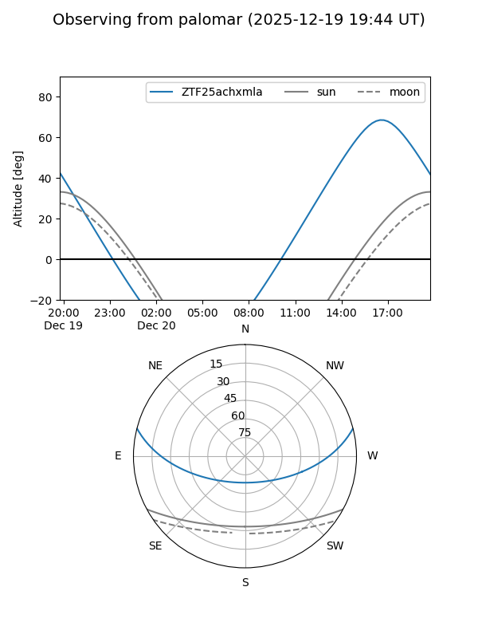
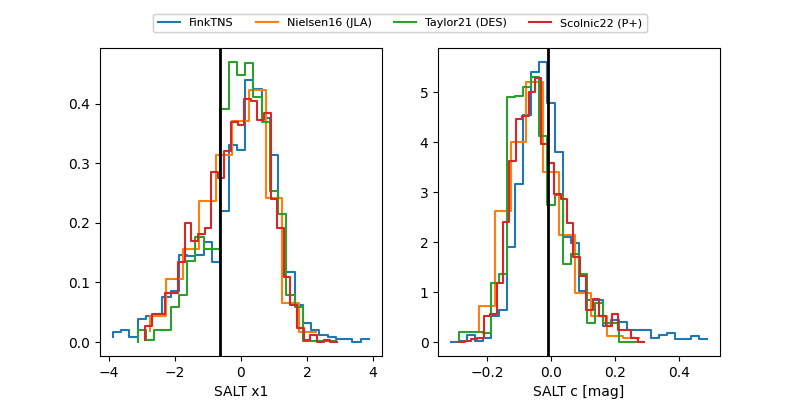

ZTF25achxmla
Target ZTF25achxmla at 2025-12-21 15:02
Aliases and brokers:
FINK: fink-portal.org/ZTF25achxmla
Lasair: lasair-ztf.lsst.ac.uk/objects/ZTF25achxmla
ALeRCE: alerce.online/object/ZTF25achxmla
alt names
ZTF25achxmla (ztf,fink_ztf)
Coordinates:
equatorial (ra, dec) = 221.3394,+12.09932
equatorial (HMS+DMS) = 14:45:21.45,+12:05:57.54
galactic (l, b) = (9.1620,+59.37111)
Flags:
Photometry:
last ztfg=19.48, ztfr=19.42
1 ztfg, 5 ztfr detections
Lightcurve

Visibility


Additional plots
